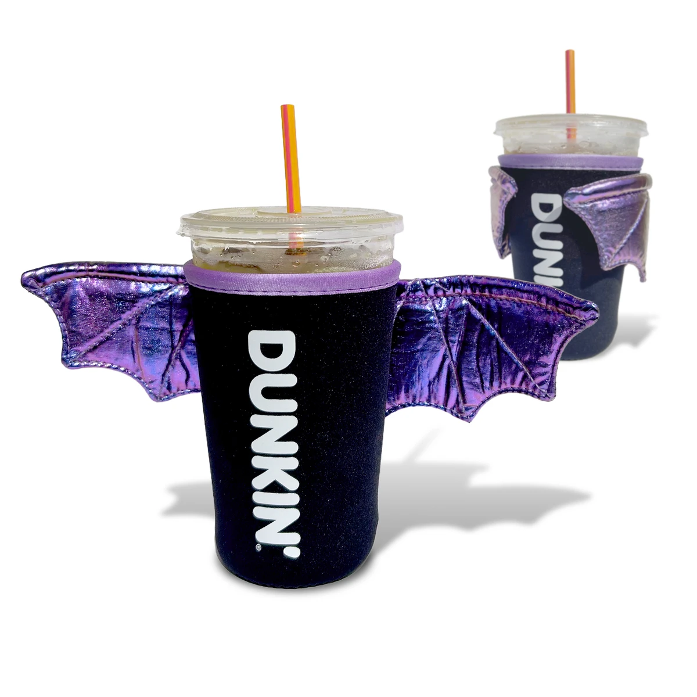
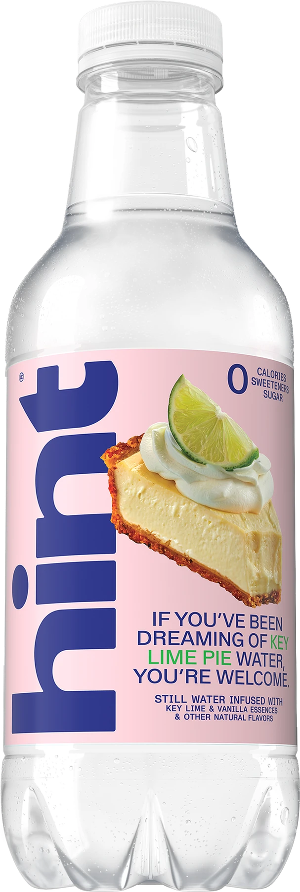
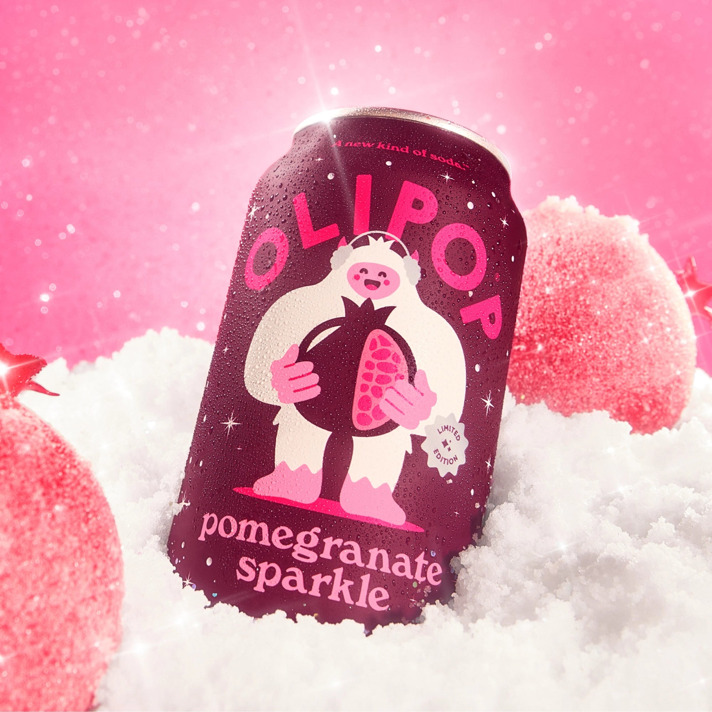
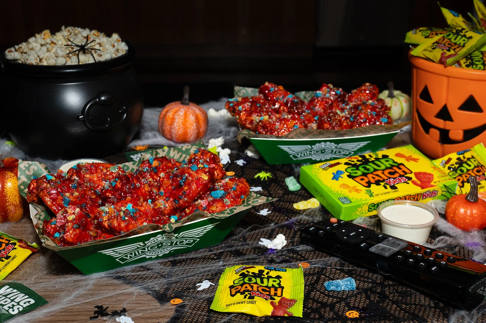
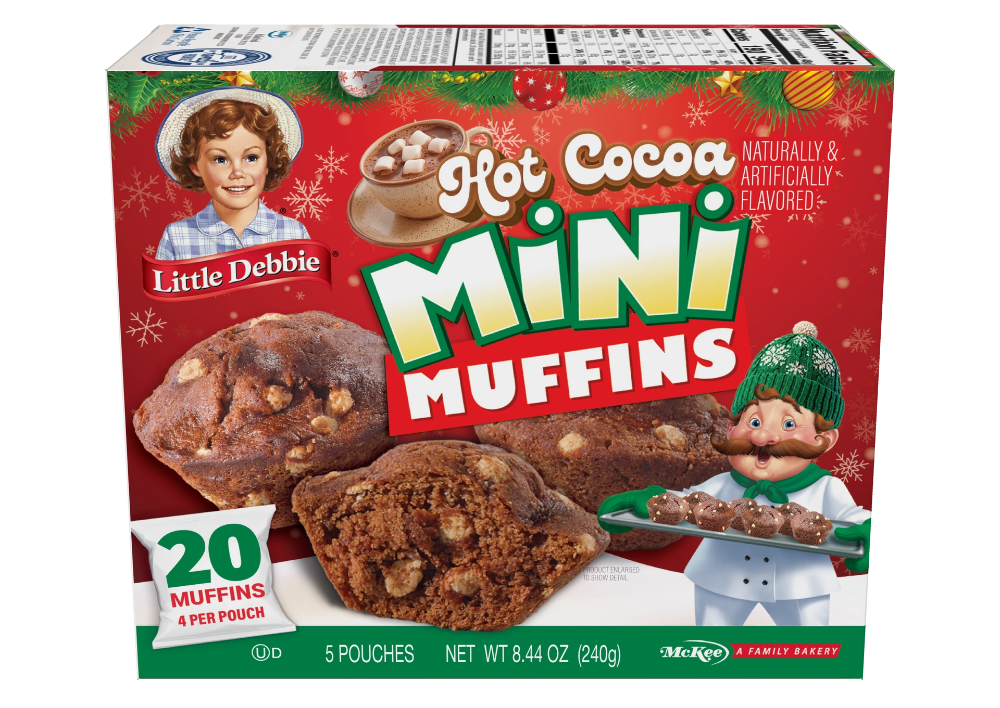
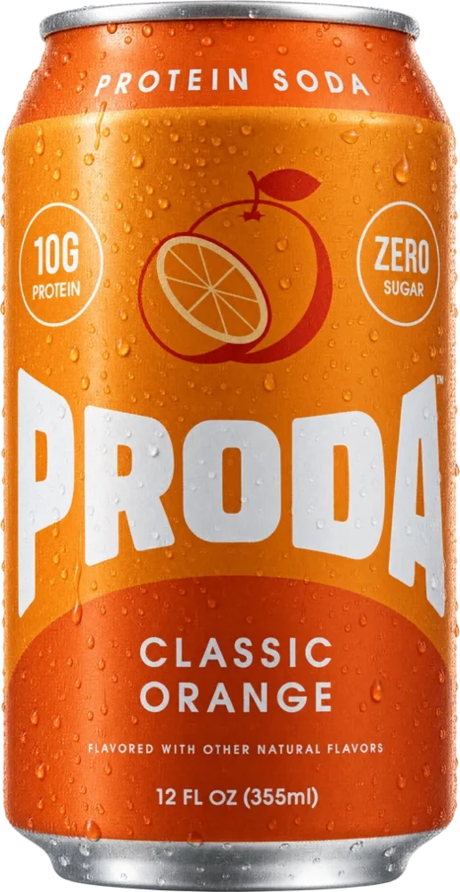

Dunkin Berry Battie is here. The bat cup sleeve arrives separately.
Two dates to keep straight before going for the new purple drink and its promotional collectible.
3 min read
What is new. What is gone. What is coming back.
Search is temporarily unavailable. You can still browse every article using the page links below.
19-24 of 74 articles

Two dates to keep straight before going for the new purple drink and its promotional collectible.

Four desserts become still water. Here is what is in the new pack and what to check before ordering.

The fruit blend, where to check for it, and a nutrition-label discrepancy shoppers should know about.

A confirmed candy-and-wings crossover, with an early-access date and a short U.S. ordering window.

The new cocoa-flavored muffins, the other holiday newcomer, and how to tell a seasonal return from a discontinuation.

The seven flavors, what is in the can, and why the October 13 announcement is not a launch-day stock alert.